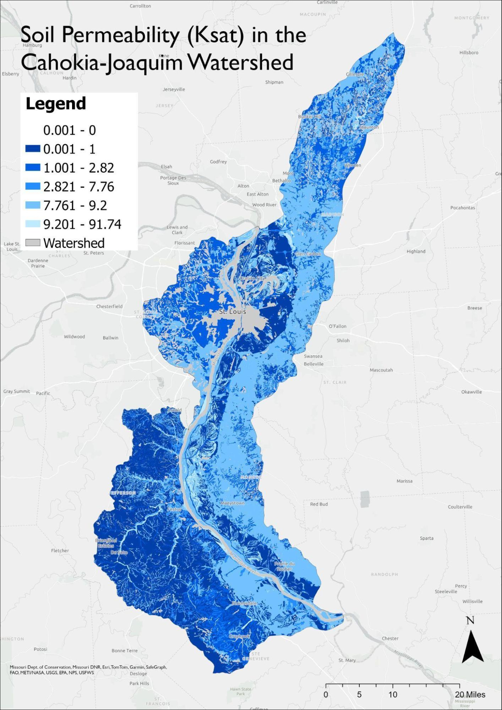

A Note: This project was a collaborative effort between Natalie Mayer, Liv Hemond, and myself and was over 70 pages in total. Below is a selection of the introductory chapter of the report, but the entire report is included below. Sections completed by me are marked with a ✵.
1.0 Background
1.1 Introduction ✵
A watershed management plan is a strategic guide designed to protect and sustainably manage water resources, as well as address the interconnected environmental, social, and economic factors that impact a watershed. This plan aims to provide a comprehensive framework for preserving and enhancing water quality, flood resilience, and ecological health for the Cahokia-Joaquim Watershed, located on the border of eastern Missouri and western Illinois and encompassing the city of St. Louis, MO. Effective water management in the Cahokia-Joaqim watershed is especially critical because its waters drain directly into the Mississippi River. The health of this watershed directly affects not only local water quality and flood management, but also the condition of the Mississippi River and the ecosystems and communities downstream. This impact extends as far as the Gulf of Mexico, where excess nutrients carried by the Mississippi River contribute to a large hypoxic zone that threatens marine life and fisheries. The recommendations included in this management plan are based on the most up-to-date scientific and economic assessments available.
1.2 Location ✵
The Cahokia-Joaquim Watershed (HUC 07140101) is located along the Mississippi River, delineating the boundary between Missouri and Illinois (Figure 1.1). To the northwest is the confluence of the Missouri and Mississippi Rivers outside Alton, Illinois. The periodic flooding of these rivers historically contributed to the enrichment of the soil, facilitating the prosperity of Cahokia, one of the largest Native American settlements in North America (Snoflo, 2024). Currently, St. Louis serves as the largest urban center within the watershed, with a metropolitan population exceeding 2.8 million (U.S. Census Bureau, 2020).
Figure 1.1. Location of the Cahokia-Joaquim Watershed (HUC 07140101). On the border of Missouri and Illinois, the Cahokia-Joaquim Watershed is bounded on the North by the confluence of the Missouri and Mississippi River ✵
1.3 Topography
The Cahokia-Joaquim watershed generally slopes downward towards the Mississippi River at its center (Figure 1.2). Within the watershed, the maximum elevation above sea level is 255 meters, and the minimum elevation is 41 meters. The areas of highest elevation are found along the southeastern edge of the watershed. The areas with the lowest elevation are found along the river itself and some of the main tributaries that feed into it. Additionally, there is a portion of land along the eastern side of the Mississippi with a fairly low and flat elevation, which is largely used for agricultural production (Figure 1.12).
Figure 1.2. Topographical map of the Cahokia-Joaquim watershed. Elevation is shown on a grayscale, with higher elevations as darker shades and lower elevations as lighter shades. The watershed boundary is outlined in black. Map was created using 3DEP DEM data from the U.S. Geological Survey (USGS, 2020).
1.4 Climate
The St. Louis metropolitan area experiences large fluctuations in both precipitation and temperature (Figure 1.3). Precipitation amounts are highly variable, with some years recording only about 30 inches of total precipitation and others recording nearly 60 (PRISM Climate Group). In general, most precipitation falls during the spring season each year. Temperature fluctuations are often more consistent than precipitation over time. Average temperatures range from at or below freezing during the winter to at or above 80 degrees Fahrenheit (°F) during the summer.
Figure 1.3. Monthly precipitation totals and monthly mean temperatures in St. Louis, MO from 1984 to 2024. Precipitation (in inches) is shown in light blue in the top panel. Average monthly temperature (in °F) is shown in purple in the bottom panel. Long term climate data were obtained from PRISM Time Series Explorer.
1.5 Geology ✵
Alluvial deposits from the Mississippi dominate the shallow watershed in the Northern Missouri side of the watershed (Figure 1.4). These soils are incredibly fertile and allowed for the development of one of the most advanced native settlements in the United States, Cahokia (Snoflo, 2024). In Illinois, the surface geology is composed of alluvial deposits and materials from the most recent glaciation, the Wisconsin Episode (Illinois State Geologic Survey, 2001). Moving south along the Mississippi, where more geology is exposed, the extensive carbonate and silicate deposits of Missouri and Illinois become apparent (Figure 1.5). These were deposited during the Paleozoic Era between 542 and 251 million years ago, when Missouri experienced drastic sea-level changes (Washington University in St. Louis, 2020). This led to the physical deposition of rock, such as shales and sandstones, and the chemical deposition of limestones and dolomites.
One of Missouri and Illinois’s most prominent geologic resources is galena, formed through significant faulting in the region (Washington University in St. Louis, 2020). Since the early 1700s, Missouri has mined galena, otherwise known as lead sulfide. Galena is also found in Northwestern Illinois, with a small town aptly named Galena becoming a hub of lead mining in the United States (Illinois Museum of Natural History, n.d.). Galena is often found in rocks deposited during the Pennsylvanian Era and is primarily used to create lead-acid batteries (Missouri Secretary of State, n.d.). Currently, Missouri is the leading smelter of lead in the United States and the second-largest lead smelting district in the world (Missouri Department of Natural Resources, 2021). The Meramec River, a tributary of the Mississippi within the watershed, runs through this lead mining area and has experienced significant lead contamination (U.S. Environmental Protection Agency, n.d.).
Figure 1.4. Geologic Map of Missouri Area. Map of the prominent geologic features on the Missouri side of the Cahokia-Joaquim watershed, which is dominated by limestones, shales, and sandstones from ancient oceans.
Figure 1.5. Geologic Map of Illinois Study Area. Map of the prominent geologic features on the Illinois side of the Cahokia-Joaquim watershed, dominated by limestones, shales, and sandstones.
Figure 1.6. Geologic Map of Lead Smelting and Mining Areas in Missouri. Map created by the Missouri Department of Natural Resources illustrating the areas of Missouri known for lead mining and smelting, which could introduce lead contamination into the Cahokia-Joaquim watershed.
1.6 Soil Characteristics
Soil permeability along the Mississippi River is fairly low (Figure 1.7) due to the presence of silty clay and silty clay loam alongside the river (Figure 1.10). Soil along the western side of the river is more susceptible to erosion than along the eastern side (Figure 1.8). However, areas even further east from the river are also highly erodible, similar to the western portion (Figure 1.8). Many areas along the riverbed have low to very low infiltration rates (Figure 1.9). These soil characteristics indicate there may be a high risk of flooding and large volumes of runoff within the watershed during precipitation events, and corresponding risks of erosion and sediment transport.

Figure 1.7. Soil permeability in the Cahokia-Joaquim Watershed. Permeability is measured by soil saturated hydraulic connectivity (Ksat). Lower permeability soils are shown in darker blue, while higher permeability soils are shown in lighter blue. Gray areas within the watershed boundary lack adequate data.
Figure 1.8. Soil erodibility in the Cahokia-Joaquim Watershed. Erodibility is quantified by the whole soil erodibility factor (Kw). More easily erodible soils are shown in brown (larger Kw), while less erodible soils are shown in green (smaller Kw). Gray areas within the watershed boundary lack adequate data.
Figure 1.9. Soil hydrologic groups in the Cahokia-Joaquim watershed. Groups range from A (high infiltration, low runoff potential) to D (low infiltration, high runoff potential). Groups B/D and C/D have a very low infiltration rate and high runoff potential under natural conditions, but would have higher rates of infiltration if drained. Each group is visualized with a unique color on the map. Gray areas within the watershed boundary lack adequate data or are too highly modified from the original state to be mapped to these hydrologic groupings.
Figure 1.10. Soil textures in the Cahokia-Joaquim watershed. Most soil within the watershed is silt loam, silty clay, or silty clay loam. Each soil texture is visualized with a unique color in the map. Gray areas within the watershed boundary lack adequate data.
1.7 Hydrology ✵
The Cahokia-Joaquim watershed is composed of hundreds of small tributaries leading into the Mississippi. One of the major tributaries is the Missouri River, the longest river in the United States, with a length of 2,540 miles (U.S. Census Bureau, 2011). Its headwaters are in Montana and drains over 529,000 square miles into the Mississippi River just North of St. Louis. Compared to the Mississippi, the Missouri River has almost three times the amount of suspended sediment, making it much more turbid (Umar et.al, 2018).
The Meramec River begins South of St. Louis in Salem, Missouri, and flows freely for 218 linear miles to its confluence with the Mississippi. While the Army Corps of Engineers attempted to erect a dam on the river in the early 1970s, the local chapter of the Sierra Club successfully fought off damming attempts (Jackson et al., 1984). The watershed surrounding the Meramec drains over 2,149 square miles (Blanc et al., 1998). This river is also impacted by mining in the Old Lead Belt, where significant storm events mobilize heavy metals, causing the Meramec to mobilize up to 27.2 tons of lead and 14.5 tons of zinc (Markland and Buckley, 2024).
Figure 1.11. Map of Rivers in the Study Area. This map shows the major hydrologic features in the study area, including the Missouri, Mississippi, and Meramec Rivers.
1.8 Land Use
Forests, agriculture, and residential use dominate land cover type in the Cahokia-Joaquim watershed. Forest covers most of the area in the southern portion of the watershed west of the Mississippi River. Cropland and pasture span along the eastern banks of the Mississippi River and cover much of the land in the northern reaches of the watershed. Residential areas are centered around St. Louis, MO, west of the Mississippi River. Relatively low percentages of land in the Cahokia-Joaquim watershed are used for commercial or industrial use. Wetlands currently only cover about 3.44%. Surface water bodies have primarily been engineered and channelized and now cover only about 3.37% of total area in the Cahokia-Joaquim watershed (Table 1.1; Figure 1.12).
Table 1.1. Land Use in the Cahokia-Joaquim Watershed. Empirical and relative land cover type provided by National Land Cover Database (NLCD) 2019 raster.
| Land Use Type | Area (Square Kilometers) | Percent Cover |
| Water | 144.59 | 3.37% |
| Residential | 1,063.32 | 24.76% |
| Commercial/Industrial | 134.61 | 3.13% |
| Barren Land | 19.39 | 0.45% |
| Forest | 1,434.05 | 33.42% |
| Rangeland | 24.12 | 0.56% |
| Cropland/Pasture | 1,327.44 | 30.90% |
| Wetland | 147.76 | 3.44% |
| Total | 4,295.28 | 100% |
Figure 1.12. Land Use of the Cahokia-Joaquim Watershed. Forests (Green) cover about a third of the total land cover. The next most prevalent land use type is Agriculture, including Rangeland (Light Brown) and Cropland/Pasture (Light Brown Dappled). About a quarter of the watershed is Residential (Red).
1.9 Biological Assets
The Cahokia-Joachim Watershed provides habitat for hundreds of species of aquatic invertebrates, fish, migratory birds, mammals, reptiles and amphibians, and plants. Historically, the watershed comprised old-growth forests, woodlands, tall grass prairies, and wetlands that supported a variety of wildlife (Missouri Department of Conservation, n.d.). Today, the watershed is largely urbanized, and one of the primary waterways in St. Louis— the River des Peres— is channelized, partially buried, and used for sewage and stormwater runoff (The Cultural Landscapes Foundation, n.d.). As a result, wildlife is negatively impacted by water quality degradation and by loss of habitat. Migrating birds, such as the American Bittern (Botaurus lentiginosus), Bachman’s sparrow (Peucaea aestivalis), and Northern Harrier (Circus hudsonius) rely on the ecosystem habitats in the Cahokia-Joachim watershed for nesting and hunting (Missouri Department of Conservation, n.d.). The health and size of the birds’ prey populations, especially amphibians, depend on the sufficient flow and quality of freshwater in the system (Tualatin Soil and Water Conservation District, 2021).
Several species declared endangered by either the federal government or the states of Missouri and Illinois are found in the Cahokia-Joachim watershed. This includes six species of aquatic invertebrates: Ebonyshell (Fusconaia ebena), Elephantear (Elliptio crassidens), Pink Mucket (Lampsilis abrupta), Scaleshell (Leptodea leptodon), Sheepnose/Bullhead (Plethobasus cyphyus), and Snuffbox (Epioblasma triquetra). Aquatic invertebrates are useful indicators of stream quality because many species are sensitive to water pollution and may exhibit the first observable population decline in response to degraded water quality. The watershed is also home to the endangered mammals, the Gray bat (Myotis grisescens) and Indiana bat (Myotis sodalis); endangered amphibians and reptiles, Blanding’s Turtle (Emydoidea blandingii) and Eastern Hellbender (Cryptobranchus alleganiensis alleganiensis); and the endangered Pallid sturgeon (Scaphirhynchus albus) (Missouri Department of Conservation, n.d.).
Table 1.2. Endangered Species in the Cahokia-Joaquim Watershed.
| Endangered Species in the Cahokia-Joaquim Watershed |
| Aquatic Invertebrates |
| Mammals |
| Amphibians & Reptiles |
| Plants |
| Fish |
1.10 Summary
Located in the Rust Belt, the Cahokia-Joaquim watershed has been shaped by nearly 150 years of industrialization and human activity, impacting its soils, land use, and ecological integrity. The fertile soils– historically enriched by periodic flooding of the Mississippi River– have been utilized for agriculture. However, their low permeability and high susceptibility to erosion have increased runoff and flood risk, has exacerbated sediment transport into water bodies. Lead extraction and smelting, which have historically capitalized on the region’s rich geologic deposits, particularly galena, have left a legacy of heavy metal contamination in local waterways, such as the Meramec River. Urbanization, concentrated around St. Louis, has replaced vast stretches of native forests, wetlands, and grasslands, reducing habitat availability for wildlife and further contributing to degraded water quality through channelization and stormwater runoff. These impacts have likely had cascading effects on the watershed’s biodiversity, particularly on sensitive or endangered species. Furthermore, the watershed’s role as a critical drainage area into the Mississippi River underscores its broader significance, as it affects downstream ecosystems, including the Gulf of Mexico’s hypoxic zone.